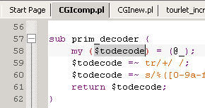
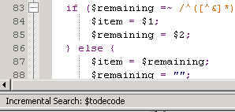
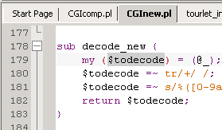

Select the string.

'Ctrl'+'I' invokes incremental search on the selected string.

Press 'Ctrl'+'I' to find the next occurrence of the string.
Continue pressing 'Ctrl'+'I' to find all occurrences in the
current file.

Press 'Ctrl'+'Page Down' to change to the next open file.
Press 'Ctrl'+'I' to find the string.